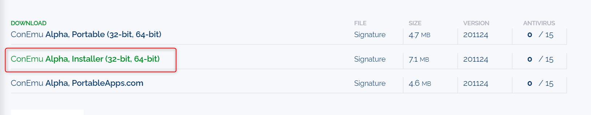
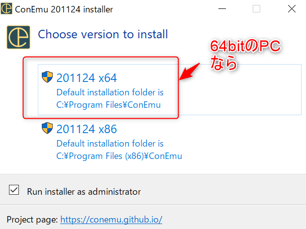
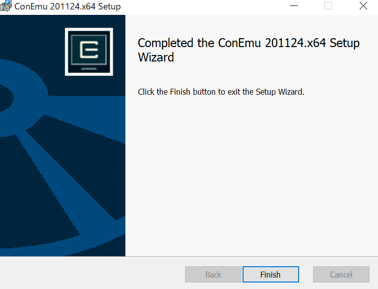
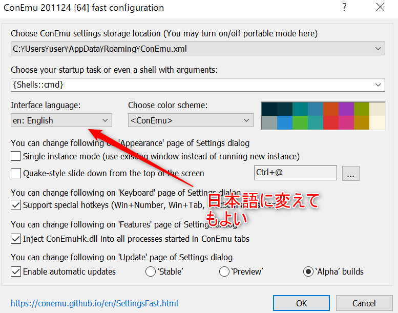
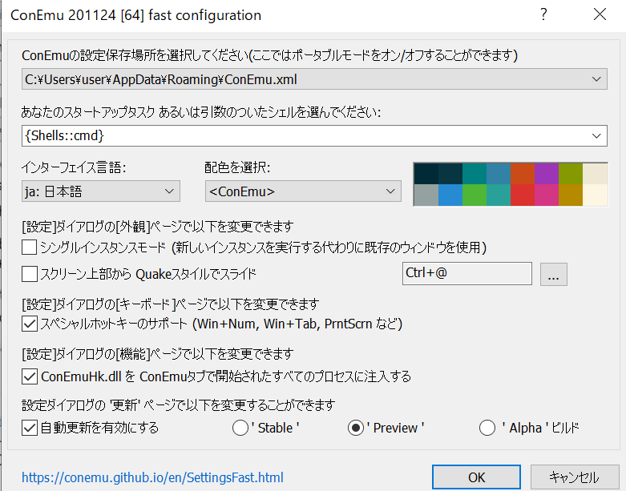
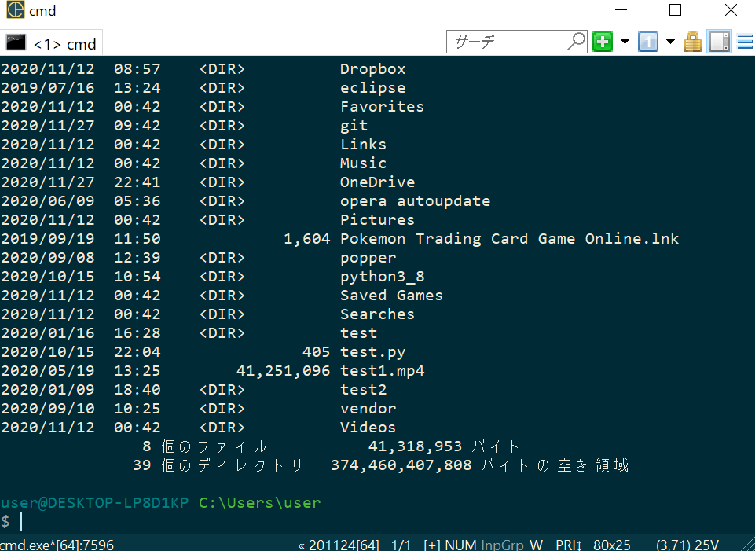
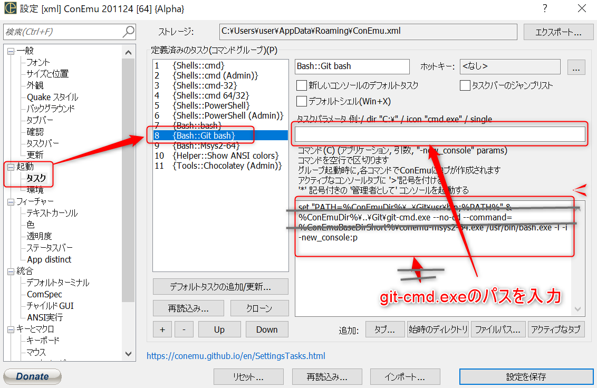
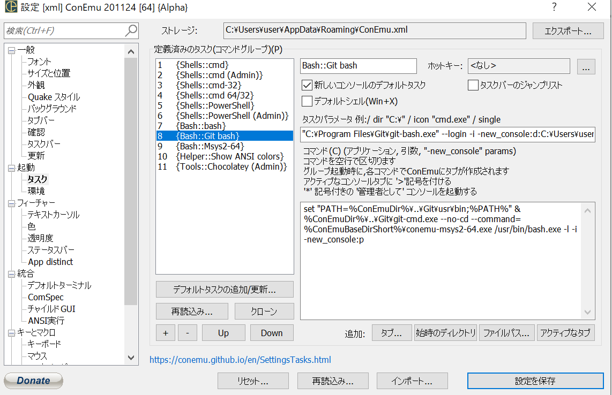
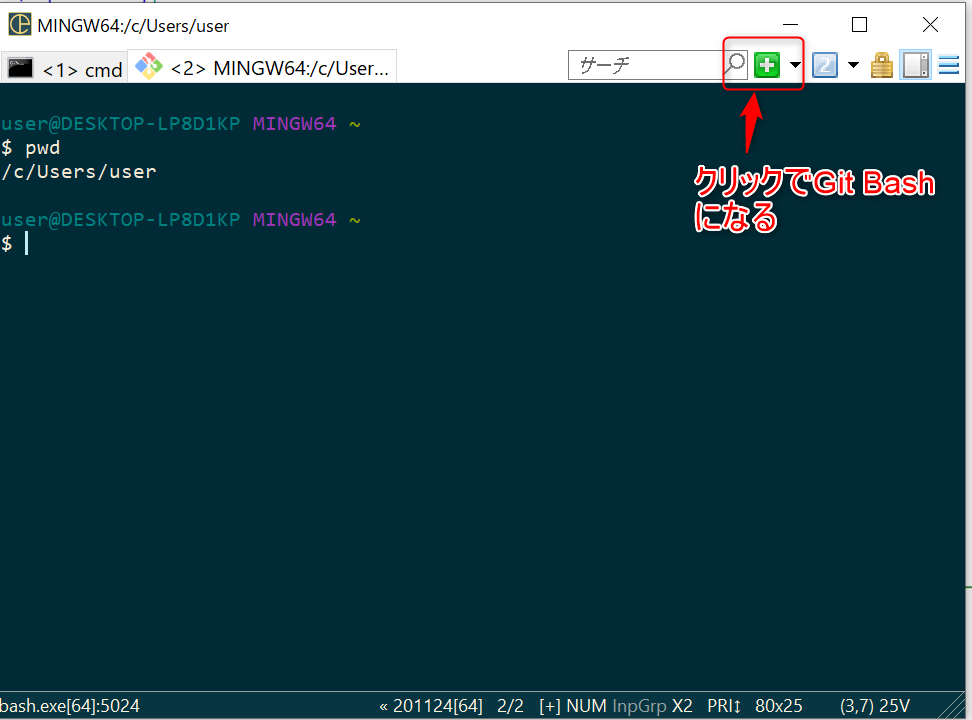

ConEmuの覚書 | ワクガンス
ConEmuのインストールとGit Bashの紐づけ設定
ConEmuを下記サイトからダウンロードする。
https://www.fosshub.com/ConEmu.html

インストーラを起動したら64bitを選択。（PCが64bitである場合）そのあとは道なり。
 
最初の起動直後の画面。そのままOKボタンでもよいが、日本語に変えておくと便利。
 
最初はコマンドプロンプトになる。

続いてGit Bashの設定を行う。
右上からSetting→起動→タスク→「8 {Bash::Git bash}」と操作。
タスクパラメータを下記のように入力。
"C:\Program Files\Git\git-bash.exe" --login -i -new_console:d:C:\Users\user\
GitBashの実行ファイルのパス --login -i -new_console:d:最初のルート
 
あとは右上の「＋」ボタンを押せば、Git Bashになる。

終わり
2020-12-3
xxx
2020-12-3
ホーム
プログラミングの覚書
Linuxの覚書
ConEmuの覚書